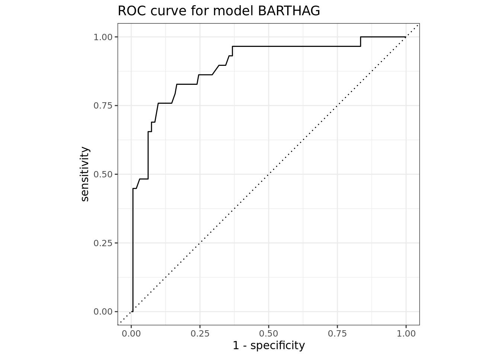

── Attaching packages ─────────────────────────────────────── tidyverse 1.3.2 ──
✔ ggplot2 3.4.0 ✔ purrr 1.0.0
✔ tibble 3.1.8 ✔ dplyr 1.0.10
✔ tidyr 1.2.1 ✔ stringr 1.5.0
✔ readr 2.1.3 ✔ forcats 0.5.2
── Conflicts ────────────────────────────────────────── tidyverse_conflicts() ──
✖ dplyr::filter() masks stats::filter()
✖ dplyr::lag() masks stats::lag()
── Attaching packages ────────────────────────────────────── tidymodels 1.0.0 ──
✔ broom 1.0.2 ✔ rsample 1.1.1
✔ dials 1.1.0 ✔ tune 1.0.1
✔ infer 1.0.4 ✔ workflows 1.1.2
✔ modeldata 1.0.1 ✔ workflowsets 1.0.0
✔ parsnip 1.0.3 ✔ yardstick 1.1.0
✔ recipes 1.0.3
── Conflicts ───────────────────────────────────────── tidymodels_conflicts() ──
✖ scales::discard() masks purrr::discard()
✖ dplyr::filter() masks stats::filter()
✖ recipes::fixed() masks stringr::fixed()
✖ dplyr::lag() masks stats::lag()
✖ yardstick::spec() masks readr::spec()
✖ recipes::step() masks stats::step()
• Learn how to get started at https://www.tidymodels.org/start/Predicting Success in March Madness
Report
Introduction and Data
Come March, every college basketball fan is focused on one goal: filling out the perfect March Madness bracket. They are trying to figure out which lower seeded teams are poised to make a surprise run and which higher seeded teams are not as good as advertised. Some have gotten close but still no bracket has been able to correctly predict all 63 games in a tournament.
In the paper “Using Statistics to Build the Ideal March Madness Bracket” by Sarah Downs, Downs emphasizes the use of different statistical forecasting techniques and looks into factors like team performance measures, player statistics, and historical trends to attempt to build the perfect bracket (Downs 2019).
However, even in the 2023 tournament, no websites reported a perfect bracket even after just the first day’s slate of games. According to NCAA.com, the chances of a perfect bracket are “1 in 9,223,372,036,854,775,808 (if you just guess or flip a coin) [or] 1 in 120.2 billion (if you know a little something about basketball).”
The goal of our project is to answer the question: What factors are the strongest predictors of success in March Madness? We are defining “success” as a team making it into the Elite Eight of the tournament. Our hypothesis is that teams with a high BARTHAG value will most be likely to find success in the tournament.
The source of the data is from kaggle.com. However, because a lot of the datasets on kaggle.com are fake, we made sure to cross-check the data with official NCAA data on NCAA.com. We found that the dataset contains accurate information. The data from the dataset is pulled from https://kenpom.com/ and https://www.barttorvik.com/#. The data encompasses March Madness tournaments spanning from 2008 - 2023 (2020 not included). Since we downloaded the dataset before the conclusion of the 2023 tournament, we used data from NCAA.com to fill in the missing data for the 2023 March Madness tournament. Each observation in the dataset represents a team in that year’s tournament.
Relevant variables
Relevant variables were pulled from the dataset by first constructing many boxplots, plotting every single variable in the dataset to round number. We used boxplots as they are pretty clear and effective to show the different numeric distributions for multiple categorical variables. From the boxplots, we roughly estimated which ones seemed to have the highest correlation, and further analyzed them in this report. Below are the three variables we chose to investigate further. They happen to be all from https://www.barttorvik.com/#.
BARTHAG: The team’s chance of winning against the average DI team
Wins Above Bubble: How many more or less wins the average bubble team would have against the team’s schedule
Barttorvik Adjusted Efficiency: Bart Torvik’s calculation of how efficient a team is offensively and defensively
Methodology
We first loaded in the necessary packages:
Rows: 1011 Columns: 40
── Column specification ────────────────────────────────────────────────────────
Delimiter: ","
chr (1): team
dbl (39): year, seed, round, k_adj_eff, k_adj_off, k_adj_def, k_adj_tempo, b...
ℹ Use `spec()` to retrieve the full column specification for this data.
ℹ Specify the column types or set `show_col_types = FALSE` to quiet this message.
Rows: 67 Columns: 40
── Column specification ────────────────────────────────────────────────────────
Delimiter: ","
chr (1): team
dbl (39): year, seed, round, k_adj_eff, k_adj_off, k_adj_def, k_adj_tempo, b...
ℹ Use `spec()` to retrieve the full column specification for this data.
ℹ Specify the column types or set `show_col_types = FALSE` to quiet this message.Rows: 1,011
Columns: 40
$ year <dbl> 2023, 2023, 2023, 2023, 2023, 2023, 2023, 2023, …
$ seed <dbl> 1, 1, 1, 1, 2, 2, 2, 2, 3, 3, 3, 3, 4, 4, 4, 4, …
$ team <chr> "Alabama", "Houston", "Kansas", "Purdue", "Arizo…
$ round <dbl> 16, 16, 32, 64, 64, 32, 8, 16, 32, 8, 8, 16, 1, …
$ k_adj_eff <dbl> 26.9363, 29.8743, 23.1345, 24.7732, 22.8757, 21.…
$ k_adj_off <dbl> 115.832, 118.854, 114.703, 119.951, 120.078, 119…
$ k_adj_def <dbl> 88.8960, 88.9798, 91.5684, 95.1774, 97.2023, 97.…
$ k_adj_tempo <dbl> 72.7700, 63.3827, 69.2256, 64.2174, 72.2672, 68.…
$ b_adj_eff <dbl> 27.588, 28.290, 21.359, 25.247, 23.914, 21.894, …
$ b_adj_off <dbl> 116.981, 118.260, 113.750, 119.495, 120.450, 119…
$ b_adj_def <dbl> 89.393, 89.970, 92.391, 94.248, 96.536, 97.159, …
$ BARTHAG <dbl> 0.957, 0.959, 0.916, 0.939, 0.927, 0.912, 0.931,…
$ elite_sos <dbl> 33.867, 23.551, 38.469, 29.575, 28.591, 28.741, …
$ b_adj_tempo <dbl> 72.704, 63.262, 69.116, 64.077, 72.427, 68.627, …
$ two_pt_perc <dbl> 54.6, 53.2, 52.9, 54.1, 56.6, 58.8, 53.8, 50.4, …
$ three_pt_perc <dbl> 33.8, 34.5, 34.4, 32.6, 38.2, 34.8, 33.9, 34.7, …
$ ft_perc <dbl> 72.6, 71.9, 71.7, 74.3, 70.9, 72.1, 75.2, 72.2, …
$ efg_perc <dbl> 52.7, 52.7, 52.4, 52.2, 56.8, 56.0, 52.7, 50.9, …
$ ft_rate <dbl> 36.7, 28.5, 29.8, 37.2, 36.5, 27.1, 31.5, 27.1, …
$ three_pt_rate <dbl> 47.8, 37.8, 34.1, 38.1, 38.0, 41.9, 35.0, 29.1, …
$ assist_perc <dbl> 54.8, 53.8, 59.5, 60.9, 65.3, 59.3, 57.1, 50.9, …
$ off_reb_perc <dbl> 33.8, 37.1, 28.4, 38.3, 31.1, 26.5, 28.3, 33.7, …
$ def_reb_perc <dbl> 72.4, 72.6, 71.7, 76.7, 73.8, 67.9, 70.6, 72.4, …
$ block_perc <dbl> 11.3, 16.4, 10.0, 9.7, 8.3, 8.7, 10.1, 11.9, 6.8…
$ turnover_perc <dbl> 19.0, 15.3, 17.5, 17.0, 18.4, 15.2, 16.5, 15.3, …
$ two_pt_perc_def <dbl> 41.2, 43.1, 47.2, 47.4, 45.9, 50.0, 47.2, 46.8, …
$ three_pt_perc_def <dbl> 28.1, 27.8, 31.2, 31.4, 32.8, 35.2, 32.7, 31.1, …
$ ft_perc_def <dbl> 71.4, 69.0, 72.3, 73.6, 71.4, 69.8, 72.4, 69.7, …
$ efg_perc_defense <dbl> 41.5, 42.5, 47.1, 47.2, 47.2, 51.1, 47.8, 46.8, …
$ ft_rate_def <dbl> 32.8, 35.8, 31.2, 19.3, 26.0, 29.0, 34.5, 27.6, …
$ three_pt_rate_def <dbl> 30.6, 43.7, 35.1, 35.4, 38.7, 37.5, 35.4, 39.3, …
$ op_assist_perc <dbl> 41.8, 53.6, 46.2, 51.5, 49.4, 58.6, 48.3, 51.3, …
$ op_off_reb_perc <dbl> 27.6, 27.4, 28.3, 23.3, 26.2, 32.1, 29.4, 27.6, …
$ op_def_reb_perc <dbl> 66.2, 62.9, 71.6, 61.7, 68.9, 73.5, 71.7, 66.3, …
$ blocked_perc <dbl> 11.4, 6.6, 7.3, 8.6, 9.3, 9.6, 8.3, 6.3, 9.3, 5.…
$ turnover_perc_def <dbl> 16.0, 22.0, 20.2, 15.4, 16.9, 22.8, 22.8, 23.6, …
$ wins_above_bubble <dbl> 10.6, 8.4, 10.5, 9.2, 7.5, 7.5, 8.0, 8.4, 5.7, 7…
$ win_perc <dbl> 85.29412, 91.17647, 79.41176, 85.29412, 82.35294…
$ pointers_per_poss_off <dbl> 1.106, 1.158, 1.062, 1.135, 1.134, 1.132, 1.095,…
$ points_per_poss_def <dbl> 0.922, 0.872, 0.963, 0.974, 0.981, 1.000, 0.948,…We will filter out rounds that equal 0 or 68 as these represent teams that did not make it into the final 64 team tournament. Finally we made a new variable called “elite_eight” that stated whether or not a team made it to at least the elite eight. This was our determined measure of success as a team making it to the elite eight had to win 3 games in a row and would essentially end within the top 12.5% of all tournament teams.
Lastly, to set up our data, we will split it for training and testing. Training and testing data is important to avoid overfitting:
Exploratory Plots and Logistic Regression
We decided to use logistic regression for our project because we are trying to predict success (making it to the Elite Eight), and our response variable is a categorical variable (round).
We further calculate AIC, make a ROC plot, and calculate AUC under the ROC plot to help us find the best-fit model of the three variables we investigated and identify which variable is the best predictor of success in the tournament. The following are the three best models that we found from our initial exploratory data analysis.
Model_BARTHAG:

BARTHAG was the best boxplot that I was able to create from the variables that I analyzed. The median score of BARTHAG increases for the most part for each round that the tournaments advances. The lower quartile especially narrows down and becomes more specific. There are quite a few outliers in the data but that is to be expected given the unpredictability and volatility of events during the NCAA tournament.
# A tibble: 2 × 5
term estimate std.error statistic p.value
<chr> <dbl> <dbl> <dbl> <dbl>
1 (Intercept) 20.9 2.70 7.76 8.61e-15
2 BARTHAG -21.3 2.94 -7.24 4.38e-13This is the creation of a logistic regression model for using BARTHAG to predict whether or not a team will make the elite eight. The equation that models this logistic regression is:
\(log(\hat{p} / (1 - \hat{p})) = 20.92 - 21.32*BARTHAG\)

In this, we generated an ROC curve for BARTHAG to see how good the model was in predicting true positives. Now, we will calculate the area under the curve (AUC).
# A tibble: 1 × 3
.metric .estimator .estimate
<chr> <chr> <dbl>
1 roc_auc binary 0.894This is the calculation of the AUC for the BARTHAG model. We got a value of 0.894 for AUC, which is very close to 1, which would have meant that BARTHAG perfectly predicts elite eight teams. This means that BARTHAG is a fairly good predictor of whether or not a team would make it to the elite eight round of March Madness.
Model Barttorvik Adjusted Efficiency (BAE):

The median barttorvik adjusted efficiency generally rises as the event progresses through rounds. As the competition progresses, BAE variability likewise reduces. The data contains a significant number of outliers, but this is to be expected given the unpredictable and volatile nature of occurrences throughout the NCAA tournament. However, an overall association can be generally observed: BAE seems to increase as the competition progresses.
# A tibble: 2 × 5
term estimate std.error statistic p.value
<chr> <dbl> <dbl> <dbl> <dbl>
1 (Intercept) 6.09 0.526 11.6 5.12e-31
2 b_adj_eff -0.208 0.0230 -9.05 1.40e-19\(log(\hat{p} / (1 - \hat{p})) = 6.09 - 0.208 * b\_adj\_eff\)
# A tibble: 192 × 3
`.pred_elite eight` `.pred_not elite eight` elite_eight
<dbl> <dbl> <fct>
1 0.293 0.707 not elite eight
2 0.313 0.687 elite eight
3 0.115 0.885 not elite eight
4 0.0582 0.942 not elite eight
5 0.107 0.893 not elite eight
6 0.0387 0.961 not elite eight
7 0.0400 0.960 not elite eight
8 0.0354 0.965 not elite eight
9 0.0266 0.973 not elite eight
10 0.0275 0.972 not elite eight
# … with 182 more rows# A tibble: 1 × 3
.metric .estimator .estimate
<chr> <chr> <dbl>
1 roc_auc binary 0.891One of our most significant scores was an AUC of 0.891, which is the third highest score that we found. This indicates that b_adj_eff is a fairly strong indicator whether or not a team makes it to the elite eight.
Model_WAB (WAB stands for Wins Above Bubble):

wins_above_bubble was also one of the best boxplots we were able to create from the variables that we analyzed. The median wins_above_bubble increases for the most part for each round that the tournaments advances with a few exceptions. As the tournament advance, the variability of wins_above_bubble also decreases. There are quite a few outliers in the data but that is to be expected given the unpredictability and volatility of events during the NCAA tournament. However, a general correlation can be roughly seen: as the tournament advances, wins_above_bubble seems to increase.
# A tibble: 2 × 5
term estimate std.error statistic p.value
<chr> <dbl> <dbl> <dbl> <dbl>
1 (Intercept) 3.46 0.246 14.1 4.19e-45
2 wins_above_bubble -0.374 0.0399 -9.37 7.25e-21This is the creation of a logistic regression model for using wins_above_bubble to predict whether or not a team will make the elite eight. The equation that models this logistic regression is, p represents the probability of whether or not round equals 1:
\(log(\hat{p} / (1 - \hat{p})) = 3.46 - 0.374 * wins\_above\_bubble\)
e ^ -0.374 = 0.69, as wins above bubble increases by 1 unit, the odds ratio is changed by a factor of 0.69
# A tibble: 1 × 3
.metric .estimator .estimate
<chr> <chr> <dbl>
1 roc_auc binary 0.898This is the calculation of the AUC for the wins_above_bubble model. We got a value of 0.898 for AUC, which is the highest scores that we got. This means that wins_above_bubble is a good predictor of whether or not a team would make it to the elite eight round of March Madness.
Fitting an Additive Model
We believe that an additive model is better than interactive because the three stats we are measuring are not related to each other so it does not make sense for them to interact. We will also use forward selection to create our model as there are only three variables we are considering so backwards modeling is not necessary.
The first model we will fit and test is using BARTHAG and wins above bubble as those two had the highest AUC when tested individually.
# A tibble: 3 × 5
term estimate std.error statistic p.value
<chr> <dbl> <dbl> <dbl> <dbl>
1 (Intercept) 10.1 3.34 3.02 0.00256
2 BARTHAG -7.93 3.94 -2.01 0.0440
3 wins_above_bubble -0.263 0.0639 -4.12 0.0000377Fitted equation: \(log(\hat{p} / (1 - \hat{p})) = 10.07 - 7.93*BARTHAG-0.26*wins\_above\_bubble\)

# A tibble: 1 × 3
.metric .estimator .estimate
<chr> <chr> <dbl>
1 roc_auc binary 0.902The AUC for this mdoel is 0.902 which means that it is about 1% better than both BARTHAG and wins above bubble at predicting elite eight success individually.
Now we test BARTHAG and BAE, our first and third best individual predictors.
# A tibble: 3 × 5
term estimate std.error statistic p.value
<chr> <dbl> <dbl> <dbl> <dbl>
1 (Intercept) 4.13 3.79 1.09 0.275
2 BARTHAG 2.80 5.42 0.517 0.605
3 b_adj_eff -0.235 0.0576 -4.07 0.0000470Fitted equation: \(log(\hat{p} / (1 - \hat{p})) = 4.13 + 2.80*BARTHAG-0.23*b\_adj\_eff\)

# A tibble: 1 × 3
.metric .estimator .estimate
<chr> <chr> <dbl>
1 roc_auc binary 0.890The AUC for this model is 0.89.
Now we will do the BAE and WAB model, our second and third best predictors.
# A tibble: 3 × 5
term estimate std.error statistic p.value
<chr> <dbl> <dbl> <dbl> <dbl>
1 (Intercept) 5.07 0.617 8.22 2.06e-16
2 wins_above_bubble -0.201 0.0688 -2.92 3.46e- 3
3 b_adj_eff -0.115 0.0385 -2.99 2.77e- 3Fitted equation: \(log(\hat{p} / (1 - \hat{p})) = 5.07 - 0.20*wins\_above\_bubble\) \(-0.12*b\_adj\_eff\)

# A tibble: 1 × 3
.metric .estimator .estimate
<chr> <chr> <dbl>
1 roc_auc binary 0.901This model has an AUC of 0.901.
Finally we will fit an additive model of all 3 variables
# A tibble: 4 × 5
term estimate std.error statistic p.value
<chr> <dbl> <dbl> <dbl> <dbl>
1 (Intercept) 2.86 3.77 0.758 0.448
2 BARTHAG 3.15 5.37 0.587 0.557
3 wins_above_bubble -0.203 0.0692 -2.93 0.00335
4 b_adj_eff -0.144 0.0641 -2.25 0.0243 Fitted model: \(log(\hat{p} / (1 - \hat{p})) = 2.86 + 3.15*BARTHAG - 0.20*wins\_above\_bubble\) \(- 0.14 * b\_adj\_eff\)

# A tibble: 1 × 3
.metric .estimator .estimate
<chr> <chr> <dbl>
1 roc_auc binary 0.900We get a AUC value of 0.900, which is actually lower than the previous model that just used BARTHAG and wins above bubble.
Using our best model to predict for 2023 teams
# A tibble: 8 × 4
`.pred_elite eight` `.pred_not elite eight` elite_eight team
<dbl> <dbl> <fct> <chr>
1 0.577 0.423 not elite eight Alabama
2 0.490 0.510 not elite eight Kansas
3 0.450 0.550 not elite eight Purdue
4 0.437 0.563 not elite eight Houston
5 0.412 0.588 not elite eight UCLA
6 0.359 0.641 elite eight Texas
7 0.322 0.678 not elite eight Arizona
8 0.308 0.692 elite eight GonzagaOur best model predicted that Alabama, Houston, Purdue, UCLA, Kansas, Gonzaga, Texas, and Arizona would be the elite eight teams from the 2023 tournament. This is a success rate of 25% as it got 2/8 teams correct being Texas and Gonzaga. Out of these teams only 5 even made it to the Sweet 16 round. Out of the 8 teams it picked, the model predicted that all four 1 seeds, three 2 seeds, and one 3 seed, showing that it had a heavy bias for teams already rated highly by the people making the bracket. This can be expected as normally these are the teams that have performed the best in the regular season and would likely be more poised to be successful on paper. Our model is far from perfect, which is to be expected given how volatile the NCAA tournament can be.
Results
Our research question was: What factors are the strongest predictors of success in March Madness? In our project, we defined “success” as a team making it into the Elite Eight of the tournament. Our original hypothesis was that teams with a high BARTHAG value would be most likely to find success in the tournament.
From our initial plotting of each variable to the round number, we found the following three variables to seem to be a strong predictor for success in the tournament: 1) BARTHAG (modeled as modelf), 2) Barttorvik adjusted efficiency (modeled as modelm), and 3) wins above bubble (modeled as modelw).
We performed a logistic regression on each variable, with the categorical response variable being round.
AIC, which stands for Akaike information criterion, which is used to compare the fit of models relative to other models. The lower the AIC value the better the model. Below are the three AIC values for the different variables:
BARTHAG: 447.3113
Barttorvik adjusted efficiency: 433.7179
Wins above bubble: 434.0668
Just comparing AIC values, the BARTHAG model had the lowest value, while the Wins Above Bubble Model has just a very slightly higher AIC. The BARTHAG model has the highest AIC value of the three variables. This shows that Barttorvik adjusted efficiency and wins above bubble seem to be the better predictors.
ROC (Receiver Operating Characteristic) and AUC (Area Under the ROC Curve) are used to measure how good of a classifier a model is, plotting true and false positive rate, compared to a random classifier. The area under the ROC curve also helps determine how good of a classifier a model is, with AUC = 1.0 being the most ideal model (the higher the AUC the better the model). Below are the three AUC values for the three different variables.
BARTHAG (modelf): 0.894
Barttorvik adjusted efficiency (modelm): 0.891
Wins above bubble (modelw): 0.898
Just comparing AUC values, it shows that all three variables are pretty good predictors of success. Modelw (Wins above bubble) had the highest value, while modelf (BARTHAG) has just a very slightly lower AUC. Modelm (Barttorvik adjusted efficiency) also has just a slightly lower AUC compared to modelw and modelf. This shows that Wins above bubble seem to be the best predictor, but the other variables also show to be very good predictors.
Back to our research question of identifying the strongest predictors of success in March Madness, we found that the three variables we investigated (BARTHAG, Barttorvik adjusted efficiency, and Wins above bubble) are all great predictors. If we were to identify just one variable as the strongest predictor of success, we would point to Wins above bubble as the strongest predictor since it has the highest AUC value and the second lowest AIC value (just higher than Barttorvik adjusted efficiency by ~0.3489.
However, since we found that all three variables are strong predictors, further research can be done by creating an additive logistic regression pairing up combinations of the three variables to find if an additive logistic regression can produce an even lower AIC and higher AUC value.
Citations
Downs, Sarah. “Using Statistics to Create the Perfect March Madness Bracket.” Journal of Sports Analytics, vol. 5, no. 2, 2019. https://escholarship.org/uc/item/7s99n4nq
https://www.barttorvik.com/#
https://kenpom.com/
https://www.ncaa.com/march-madness-live/scores
https://www.ncaa.com/news/basketball-men/bracketiq/2023-03-16/perfect-ncaa-bracket-absurd-odds-march-madness-dream